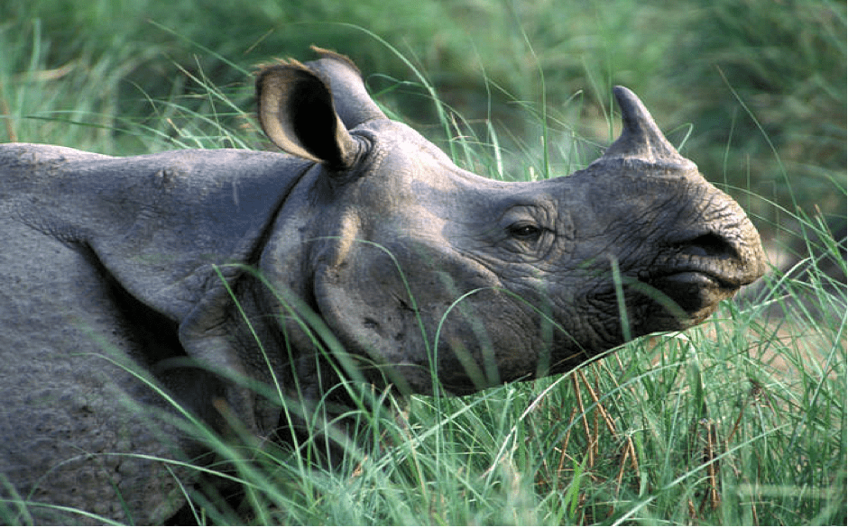
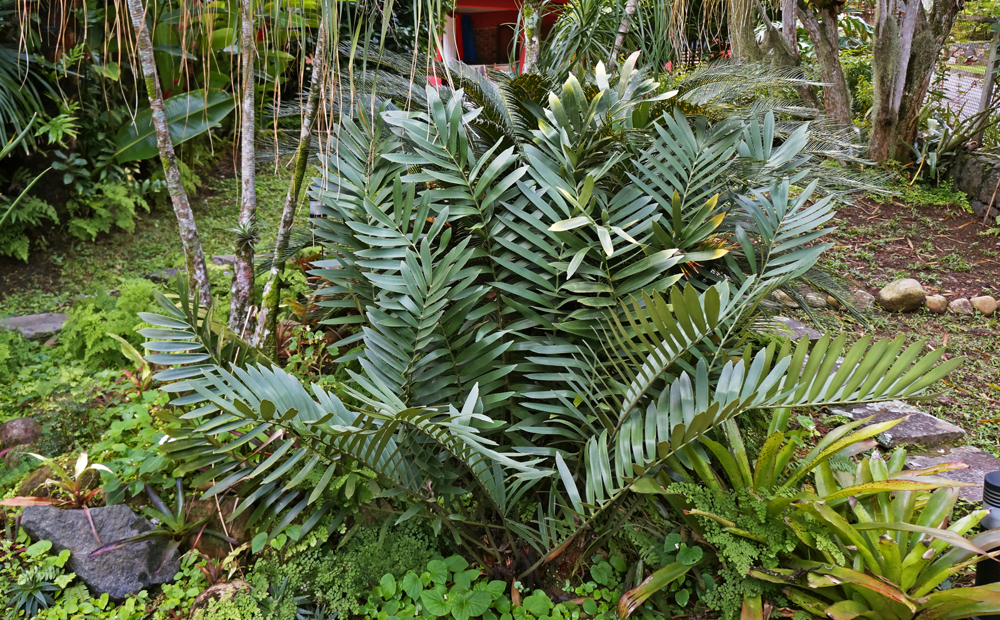

What is ‘Flora and Fauna’?
The planet Earth is a beautiful place to live in. Life has flourished on the planet, thanks to the bountiful sun and vast oceans of water.
No matter where we go on the planet, there are stunning plants, flowers, and animals that catch our attention.
They are two very important aspects of any eco-system.
Of all the living organisms on the planet, the most commonly seen by us are the plant life and the animal life.
Apart from these two, more forms of life abound in the earth, but are harder to see with the naked eye.
This is why the flora and fauna i.e. plant and wildlife of the earth are fascinating to observe and study.
In this technological era, humans interact more with gadgets that it’s almost impossible to find time to interact with nature.
Some Rare and Exotic Wildlife Species that can be found in India

1. Greater One-Horned Rhinoceros
The Greater One-Horned Rhinoceros, alias Indian Rhinoceros, are listed as one of the vulnerable species by the International Union for Conservation of Nature.
The animal can be found in India and Nepal, particularly in the foothills of the Himalayas.
Poaching of horns is an important reason for the decline in the number of the Indian Rhinoceros.
There has been a dramatic increase in the numbers of Greater One-Horned Rhinoceros since 1975,
but there is a consistent threat due to an increase in hunting cases. With at least half of the total population,
India’s Kaziranga National Park remains the key reserve for this species.
More efforts should be undertaken for the conservation of the Greater One-Horned Rhinoceros.
Places where Greater One-Horned Rhinoceros can be spotted:
Kaziranga National Park, Dudhwa Tiger Reserve, Pobitora Wildlife Sanctuary
Do You Know?
- The white rhino is the largest rhino species and the largest land mammal after the elephant.
- During the Mughal Era, the rulers used to use Greater One-horned Rhino in fights against elephants as entertainment.
The rhinos would often win. Thankfully, this sport is no longer practiced or permitted.
2. African elephant
The African elephant is the largest animal walking the Earth.
Their herds wander through 37 countries in Africa. They are easily recognized by their trunk that is used for communication and handling objects.
And their large ears allow them to radiate excess heat. Upper incisor teeth develop into tusks in African elephants and grow throughout their lifetime.
There are two subspecies of African elephants—the Savanna (or bush) elephant and the Forest elephant.
Savanna elephants are larger than forest elephants, and their tusks curve outwards. In addition to being smaller,
forest elephants are darker and their tusks are straighter and point downward.
There are also differences in the size and shape of the skull and skeleton between the two subspecies.
Places where African elephant can be spotted:
Congo Basin, Coastal East Africa
Do You Know?
- STATUS:- Vulnerable
- POPULATION = Approximately 415,000 in the wild
- SCIENTIFIC NAME = Loxodonta africana
- WEIGHT = 6 tons
3. Giant Panda

Pandas live mainly in temperate forests high in the mountains of southwest China, where they subsist almost entirely on bamboo.
They must eat around 26 to 84 pounds of it every day, depending on what part of the bamboo they are eating.
They use their enlarged wrist bones that function as opposable thumbs.
A newborn panda is about the size of a stick of butter—about 1/900th the size of its mother—but females can grow up to about 200 pounds,
while males can grow up to about 300 pounds as adults.
These bears are excellent tree climbers despite their bulk.
Places where Greater One-Horned Rhinoceros can be spotted:
Yangtze (Mountains, Forest Habitat)
Do You Know?
- STATUS:- Vulnerable
- POPULATION:- 1,864 in the wild
- WEIGHT:- 220–330 pounds
- HABITATS:- Temperate broadleaf and mixed forests of southwest China
1. Cardboard Palm

Cardboard palm (Zamia furfuracea), an endangered cycad listed on the IUCN Red List of Threatened Species.
Cardboard palm plant (Zamia furfuracea) is one of those ancient plants with a lot of character that can grow inside or outside depending upon your gardening zone.
What is a Zamia cardboard palm? In fact, it isn’t a palm at all but a cycad — like the sago palm plant.
Knowing how to grow Zamia palms starts with knowing your USDA planting zone.
This little guy is not winter hardy in the majority of North American regions, but it makes an excellent container or houseplant anywhere.
Grow it outdoors in USDA zones 9 to 11 year round.
Although not a palm tree, its growth habit is superficially similar to a palm; therefore it is commonly known as cardboard palm or cardboard cycad.
Other names include cardboard plant, cardboard sago, Jamaican sago, and Mexican cycad.
- Division:- Cycadophyta
- Scientific name:- Zamia furfuracea
- State:- Mexico
2. Venus Flytrap
Venus flytrap also known as dionaea muscipula is a carnivorous plant. It means the plant consumes small insects and animals as food.
Venus flytraps can be found in the Eastern Carolia especially in wet inhabitants. Venus flytrap has special lobes to trap the prey animals.
Do You Know?
- STATUS:- Vulnerable
- Rank:- Species
- Scientific name:- Dionaea muscipula
- Venus flytrap also known as dionaea muscipula is a carnivorous plant.
It means the plant consumes small insects and animals as food. Venus flytraps can be found in the Eastern Carolia especially in wet inhabitants.
Venus flytrap has special lobes to trap the prey animals.
- This plant will digest the insects within a time span of 10 days.
- The leaves venus flytrap opens its lobes widely to catch the prey.